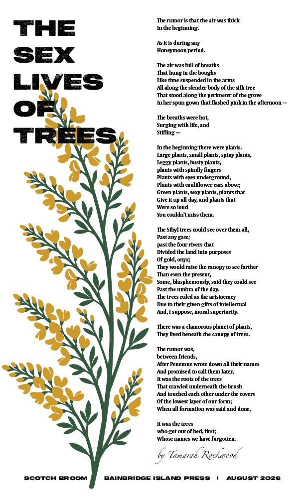

August 2026
Tamarah Rockwood
View full size →

Poetry broadsides, printed and placed in Free Little Libraries across Bainbridge Island—one each month.
Scotch Broom prints poetry broadsides and distributes them in Free Little Libraries across Bainbridge Island monthly.
It owes a debt to the pioneering work of Karen Sawyer’s Heavy Jeens project in Bremerton, WA.
Click a poster to view full size